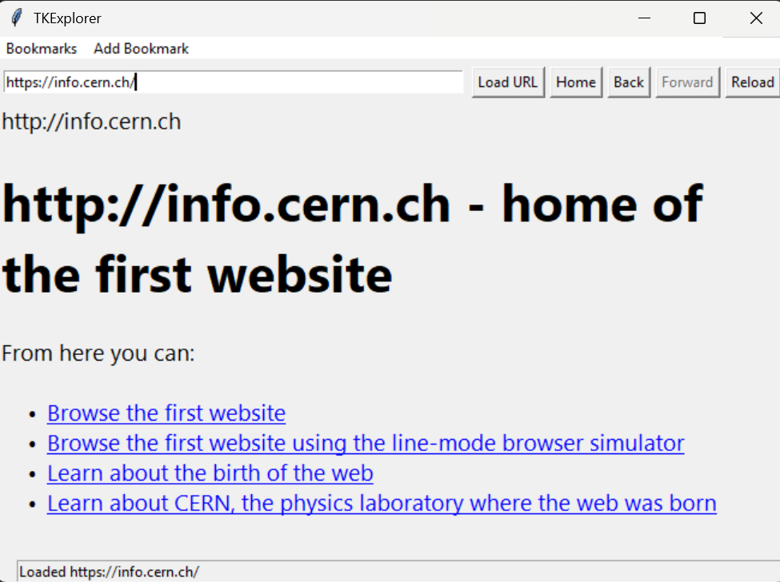

1. Visit the GitHub repository.
2. Click on "TKExplorer.zip".
3. Press the three dots button to the right, then hit download.
1. Locate the browser ZIP file.
2. Right-click the file and select "Extract All...".
3. Choose a destination folder and click "Extract".
4. The extracted folder will open automatically.
Ensure Python is installed as a Windows app. You can download it from the Microsoft Store.
Windows will not find the interpreter if installed another way.
1. Open Command Prompt.
2. Install the required modules by running the following commands:
pip install tkhtmlview
pip install beautifulsoup4
Double-click launch.bat in the extracted folder to start the browser. Here's what browsing the first website looks like in TKExplorer!
